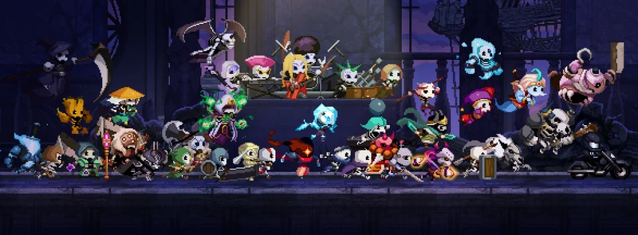

a
b
c
witch

Informações
Localização: Castelo do Rei Demônio
Descrição:
A definir
Ogre Peddler

Informações
Localização: Castelo do Rei Demônio
Descrição:
A definir
Fox Hunter
Informações
Localização: Vila do Rei Demônio
Descrição:
- Um caçador meio excêntrico que aparece na base.
- Usa ossos como moeda pra evoluir seus Skulls de forma absurda..
- Fala de forma meio arrogante, mas é gente boa.
a
b
Fases e Biomas em Skul: The Hero Slayer
 ATO 1 – Floresta da Harmonia
ATO 1 – Floresta da Harmonia
Bioma:
Floresta escura e densa, com ruínas antigas e raízes retorcidas.
Níveis:
Plataformas naturais, obstáculos com espinhos e buracos no chão.
Inimigos:
- Carleon Archer
- Assassino Carleon
- Carleon Man at Arms
- Carleon Recruit (Enemy)
- Flame Wizard
- Glacial Wizard
- Ent
- Root Ent
- Blossom Ent
- Gigantic Ent
- Land Wizard
- Chaser
- Forest Root Keeper
- Cannon Specialist
- Assassin Mercenary
- Thunder Caller
- Ent Apocalypse
 ATO 2 – Grande Salão
ATO 2 – Grande Salão
Bioma:
Castelo medieval fortemente vigiado.
Níveis:
Corredores fechados, pontes suspensas, várias elevações.
Inimigos:
- Golden Carleon Recruit
- Gold Mane Archer
- Gold Mane Man at Arms
- Gold Mane Priest
- Gold Mane Recruit
- Gold Mane Spearman
- Gold Mane Wizard
- Chief Maid
- Maid (Melee)
- Maid (Ranged)
- Servant
- Busy Maid
- Gold Mane Guard
- Hammer Giant
- Lord Chamberlain
- Butler
- Carleon Heavy Artillery
- Wind Band
- Wind Band Leader
 ATO 3 – Laboratório Negro
ATO 3 – Laboratório Negro
Bioma:
Estruturas antigas tomadas por fogo e magia.
Níveis:
Ambientes perigosos com plataformas instáveis e fogo no chão.
Inimigos:
- Alchemist (Enemy)
- Alchemist Summoner
- Grand Alchemist (Enemy)
- High Alchemist
- Dark Quartz Ent
- Dark Quartz Golem
- Dark Quartz Ogre
- Dark Quartz Recruit
- Loose Subject
- Strange Subject
- Refined Revengeful Spirit
- Unstable Revengeful Spirit
- Toxic Alchemist
- Sticky Subject
- Dark Man at Arms
- Warder
- High Summoner
- Flying Golem
- Armored Golem
- Transcendent
- Bloated Subject
 ATO 4 – Fortaleza do Destino
ATO 4 – Fortaleza do Destino
Bioma:
Instalações mágicas cheias de experimentos e tecnologia arcana.
Níveis:
Plataformas móveis, tubos, áreas mágicas instáveis.
Inimigos:
- Aged Fanatic
- Fanatic
- Fanatic Carleon Recruit
- Fanatic Remnant
- High Fanatic
- Martyr Fanatic
- Missionary Fanatic
- Holy Knights Archer
- Holy Knights Assassin
- Holy Knights Magician
- Holy Knights Man at Arms
- Holy Knights Priest
- Holy Knights Recruit
- Holy Knights Spearman
- Leonia of Bravery
- Leonia of Wisdom
- Weeping Statue
- Leonia of Protection
- Demon Hunter
- Heretic Inquisitor
- Moderator
- Executioner
- Awakened
- Arbiter
 ATO 5 – Pátio Sagrado
ATO 5 – Pátio Sagrado
Bioma:
Palácio sagrado com salões imponentes e arquitetura real.
Níveis:
Salas amplas, colunas altas, cenário de batalha decisiva.
Inimigos:
- Protector
 ATO 6 - Mancers
Bioma:
Uma vasta região desértica e desolada, marcada por ruínas de uma civilização esquecida. A vegetação escassa é densa e sombria, sugerindo uma corrupção mágica que permeia o ambiente.
Níveis:
ruínas de cidades antigas, com castelos em ruínas que servem como locais de batalha contra chefes poderosos.
Inimigos:
- Mystic Mancer
- Dimension Mancer
- Space Mancer
- Silence Mancer